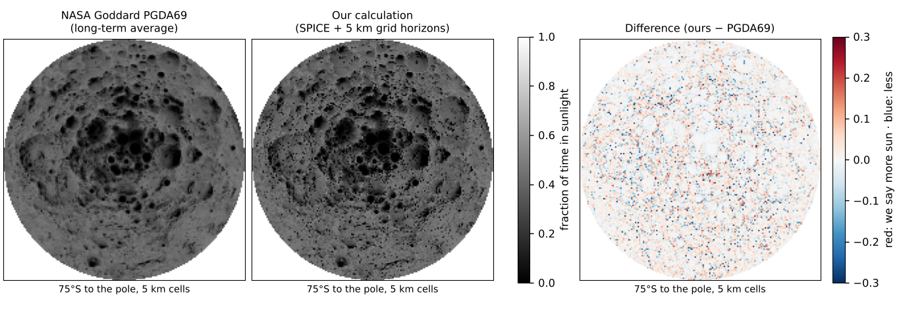
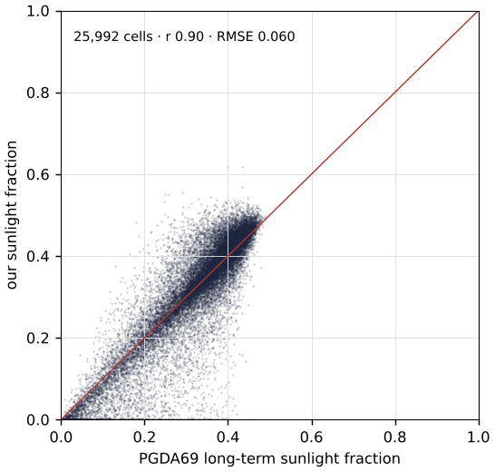

Checks
The other pages say where and when a lander will see the Sun and Earth. This page answers the next question: why should you believe those numbers?
An answer from the tool is built in layers, and each layer can be wrong in its own way. First, where the Sun and Earth sit in the lunar sky. Second, whether the local skyline blocks them. Third, how those moments add up over days and years. Each layer is checked against a source outside the tool, and a later layer only means something once the earlier one holds.
At a glance
| Layer | Check | Compared with | Result | Verdict |
|---|---|---|---|---|
| Sky | Sun and Earth directions | JPL Horizons and SPICE tables, 5 places | 16 of 16 within 0.1°; largest gap 0.0006° | Pass |
| Sky | Long date range table | Earlier Horizons range table | Earth direction up to 0.006° and 81 km apart, cause unknown | Open |
| Sky | Moon frame change (PA to ME) | SpiceyPy | Matches after a bug fix | Pass |
| Skyline | Horizon masks, 13 sites | Older masks on the team Drive | RMS gap 0.03°–4.98°; Amundsen rim up to 11.1° | Measured |
| Over time | Long-term sunlight | NASA Goddard PGDA69 maps | RMSE 0.060, r 0.90 over 25,992 cells | Measured |
| Over time | Measured sunlight, 88–90°S | LROC WAC illumination map | RMSE 0.062, r 0.90 over 468 cells | Measured |
| Over time | Sunlight and Earth view by mast height | JPL IPN report, point B1 | Sun share 28 points lower on average | Open |
| Over time | Longest run of sunny days | Wueller et al. 2026, 130 points | Rank correlation 0.46 | Open |
| Records | Landing-site coordinates | Published sources | 22 of 32 match; 1 has no source | Measured |
| Over time | Blue Ghost 1 sunset | Firefly's reported 346 hours of daylight work | Our skyline: 1.2 h early. Flat horizon: 1.6 h late | Measured |
| Over time | Other real missions | Reported sunset and Earth-loss times | — | Not done |
| Skyline | Predicted light or shadow at a point | LROC NAC photographs | 774 predictions written down first; photos not yet read | In progress |
| Use | Our own slope at landing sites | NASA's published 5 m slope maps | — | Not done |
How we check
- Pass rules. Only one pass rule exists so far: Sun and Earth directions must agree within 0.1°. It was in the team specification by 14 November, before the final run on 15 November, and it is still marked temporary. Every other row is measured and shown without a pass or fail, because no rule was set before the run.
- Labels. Pass: meets a rule set before the run. Measured: the gap is known but no rule was set, so no pass or fail. Open: a gap we cannot yet explain. In progress: started but not finished. Not done: not started.
- Failures stay. Open problems are listed with their cause, or with 'cause unknown'. Bugs the checks caught are kept in their own section, with the first result next to the fixed one.
- What kind of check. Validation compares the tool with an independent outside source. A consistency check compares two results that share a source, so agreement shows the working is right but not that the shared source is. A copy check compares our file with NASA's original.
- Quality labels. Each result carries the quality label of its source file from the team data audit. VALIDATED means re-run from traced inputs. REFERENCE_ONLY means an earlier run was kept but not every input could be traced.
- A baseline next to the score. Where a single number could look better than it is, we show what a naive guess would score.
1. Ephemeris: Sun and Earth directions · 16 of 16 within 0.1°
Where the Sun and Earth sit in the sky, seen from a point on the Moon. The tool uses JPL's SPICE toolkit with the MOON_ME frame. It is compared with two reference tables: one from JPL's Horizons service and one we computed separately with SPICE.
| Place | Times | Largest gap, Sun | Largest gap, Earth | Verdict |
|---|---|---|---|---|
| Connecting ridge, south pole, 14 Nov–14 Dec 2026 | 721 | 0.000008° | 0.000027° | Pass |
| Chandrayaan-3 site, 23 Aug–6 Sep 2023 | 337 | 0.000004° | 0.000026° | Pass |
| Apollo 11 site, 20–23 Jul 1969 | 73 | 0.0002° | 0.000035° | Pass |
| IM-1 Odysseus site (Horizons only) | 193 | 0.000003° | 0.000022° | Pass |
| IM-2 Athena site (Horizons only) | 121 | 0.000004° | 0.0006° | Pass |
Gaps are the angle between the two directions, worst case over all times, taking the larger of the Horizons and SPICE comparisons. The pass line, 0.1°, is about 160 times the worst gap. Kind: consistency check. Horizons and SPICE both use JPL's planetary position data, so this shows our working is right, not that JPL's data is. Quality: VALIDATED.
Open The tool's long table (1 Nov 2026 to 1 Jan 2031) was also compared with an earlier Horizons table over 10,225 shared times. The Sun agrees to 0.0002°. The Earth differs by up to 0.006° in direction and 81 km in distance, a steady offset that also appears in all 16 mission tables. It looks like a difference in definitions, but the cause has not been found.
Source filesweb/public/data/validation/ephemeris.json, ephemeris_spice.json; Drive Reference_Tables/horizons_*.csv, spice_*.csv
2. LOLA terrain: the skyline
Height maps from the Lunar Orbiter Laser Altimeter. The tool turns them into a skyline (a horizon mask) for each site: how high the ground rises in each compass direction.
| Check | Compared with | Result | Verdict |
|---|---|---|---|
| Height maps, 80 m and 240 m, and their labels Copy check | MD5 checksums in NASA's PDS Registry | Every file matches byte for byte. | Match |
| Skylines at 13 sites, 360 directions each Consistency check | Older masks on the team Drive, also built from LOLA | RMS gap: 7 sites under 0.5°, 4 sites 0.5–1.5°, peak near Shackleton 2.59°, Amundsen rim 4.98° (worst direction 11.1°). | Measured |
| Slope on the region-wide map Copy check | NASA's own slope maps (80 m and 240 m, LOLA) | Not calculated by us: each 5 km cell is the mean and 90th percentile of NASA's slope map. Files listed as VALIDATED in the team audit. | Measured |
| Slope at landing sites, for the landing-error check Validation | NASA's published 5 m slope maps (PGDA78) or NAC terrain slope maps | This slope is ours, worked out from LOLA 10–30 m heights. It has not been compared with a published slope map. | Not done |
Six of these sites were moved to better-sourced coordinates on 15 November (by 179 m to 1,055 m), and the Drive masks still use the old coordinates. For those six, the gap mixes the move with any real difference, so the Amundsen figure does not by itself mean either mask is wrong. Quality: REFERENCE_ONLY.
Source filesweb/public/data/validation/masks.json; docs/validation.md; Drive Horizon_Masks/
3. Illumination: long-term sunlight · RMSE 0.060
NASA Goddard's PGDA69 maps give the share of time each spot sees the Sun, averaged over about 18.6 years. We ran our own calculation the same way, from our skylines and SPICE, over 1,520 days, and compared cell by cell across the whole region from 75°S to the pole.

| Measure | Our calculation | Baseline: one average value everywhere |
|---|---|---|
| RMSE (share of time) | 0.060 | 0.114 |
| Mean gap | −0.002 | 0 |
| Median size of gap | 0.021 | — |
| Cells within 0.05 / 0.10 | 77% / 92% | — |
| Correlation r / rank correlation | 0.90 / 0.87 | 0 |
| Worst cell | 0.45 | — |

Why the baseline: a map that says 0.32 (the regional average) in every cell scores RMSE 0.114 without knowing anything about the terrain. Our calculation halves that. Kind: validation, though both sides start from LOLA terrain. The two differ in period, observer height (ours 2 m), and resolution (our skyline uses 5 km cells and 5° steps; PGDA69 uses 60–120 m pixels), so a perfect match is not expected. Quality: REFERENCE_ONLY. The baseline and the 0.05 / 0.10 shares were computed for this page from the same stored files. Earth-in-view has not been compared with PGDA69 yet.
Source filesweb/public/data/validation/illumination.json, illum_ours.f32; web/public/data/grid/layers/illum_avg.f32
4. LROC: measured sunlight and photographs
The Lunar Reconnaissance Orbiter Camera. Its Wide Angle Camera (WAC) team built a map of how often each spot near the pole was actually seen lit, from years of images. This is the only sunlight check here based on observation rather than a model.
| Check | Compared with | Result | Verdict |
|---|---|---|---|
| Our long-term sunlight, 88–90°S Validation | WAC illumination percentage map | 468 cells. RMSE 0.062, r 0.90, mean gap +0.016. | Measured |
| Same, time-weighted WAC map Validation | WAC time-weighted map, gaps filled | RMSE 0.063, r 0.90. | Measured |
| How far apart are the two NASA products? Measurement | PGDA69 against the WAC map, same cells | RMSE 0.040, r 0.96 over 516 cells. Even two NASA products do not agree exactly, so a gap near 0.04 is the realistic floor. | Measured |
| Light or shadow at a point, at the moment a photo was taken Validation | LROC NAC close-up photographs at 27 named sites and 428 polar grid points | Our prediction (lit, edge or shadow) is written down for all 774 photos before anyone looked at them: 130 with a full skyline (67 lit, 11 edge, 52 shadow), 644 with a flat horizon. 31 photos are downloaded. The column for what each photo actually shows is still empty. | In progress |
Why the photo check is not finished: the photos are raw camera files, without map coordinates. Finding which pixel is the site needs the camera's position and pointing for each shot, which has not been set up yet. The predictions cannot be changed now, because they were recorded first. Source: Drive Validation_Images/PILOT_LROC_NAC/manifest_reconciled_2026-11-14.csv.
The WAC map only covers 88–90°S, so it says nothing about the rest of the region. Quality of the WAC files: LIMITED_USE. The PGDA69-against-WAC figure was computed for this page.
Source filesweb/public/data/validation/illumination.json; web/public/data/grid/layers/wac_ill_pct.f32; Drive Raw_Data/NASA_Gap_Collection_2026-11-14/Terrain_Geology/WAC_POLE_ILL_*_SOUTH_100M.IMG
5. Diviner: surface temperature
Surface temperature from the Diviner radiometer. The tool does not use it to work out sunlight or Earth view, so there is no answer to check against it. Our extracted Site01 values match the original table row for row (99 of 100 cells have a value, 55.80–206.66 K). Diviner is not used as evidence of ice.
Source filesDrive Catalogs/COLLECTION_REPORT.md, Catalogs/diviner_provenance.json
Other checks
| Check | Compared with | Result | Verdict |
|---|---|---|---|
| Moon frame change, PA to ME Validation | SpiceyPy | Our matrix matches exactly after a bug fix (see bugs). Rotation 0.029°, about 875 m at the surface. The ephemeris uses SPICE's MOON_ME directly, so no output was affected. | Pass |
| Sun and Earth view by mast height, 2 m to 3,000 m Validation | JPL IPN Progress Report 42-176C, point B1 | Earth: we are about 5 points lower at every height, correlation 1.00. Sun: we say 35–40%, JPL says 97%. | Open |
| Longest run of sunny days in midsummer, 2025–2032 Validation | Wueller et al. 2026, 130 candidate points | Rank correlation 0.46 for Sun, 0.31 for Sun and Earth together. Ours 6.7 days longer on average. | Open |
Mast height: the report does not state which way its map axes run. We tried all 8 readings, and the ground height at B1 still differs from the report's 1,261 m by over 100 m, so we may be at the wrong point. At our point, PGDA69 agrees with our Sun figure. We treat the Sun gap as a location problem, not proof of an error, but it stays open until the position is confirmed.
Longest sunny run: the paper does not define its midsummer period or what counts as sunlit, so we assumed ±20 days around the southernmost Sun, half the disc visible, for 12 hours. With that much assumed, we draw no conclusion.
Source filesweb/public/data/validation/frames.json, mast.json, wueller.json; docs/validation.md
Site and mission records
| Check | Compared with | Result | Verdict |
|---|---|---|---|
| Coordinates of 32 sites | NASA NSSDCA, LROC, Wueller et al. 2026 and the NASA Artemis III region list | 22 match their source. 9 are the centre of a named region, not a point. Shackleton rim has no source yet. IM-1 differs from its LROC position by 48 m, cause unknown. | Measured |
| Landing times of 16 missions | Published records | All 16 match, but 8 only to the day. The hour and minute for those 8 have no source. | Measured |
| Outcome and surface time of 16 missions | Published records | Outcome sourced for 2 of 16. Surface time sourced, or worked out from sourced times, for 6; the rest are left blank rather than filled with planned durations. | Measured |
| Blue Ghost 1 sunset, 16 Mar 2025 Validation | Firefly: 346 hours of daylight work after landing at 08:34 UTC on 2 Mar, so daylight ended around 18:34 UTC. Last signal about 23:15 UTC. | Sun's centre drops below our 15 km grid skyline at 17:24 UTC (1.2 h early). With a flat horizon it sets at 20:11 UTC (1.6 h late). | Measured |
| Other real missions Validation | Reported sunset and Earth-loss times (for example SLIM, Chandrayaan-3) | The team evidence file has no reported sunset times for these. IM-2's end time is known but was caused by battery loss on its side, not by the sky. | Not done |
Blue Ghost: '346 hours' counts daylight work, which may stop before the Sun fully sets, so the reported time is approximate and no pass rule was set. Our skyline and the flat horizon fall either side of it. The Blue Ghost sunset figures were computed for this page from the app's stored SPICE table and its 15 km skyline grid.
Source filesweb/public/data/validation/catalog_sites.json, catalog_missions.json; web/public/data/ephemeris/missions/blue_ghost_m1.bin; web/public/data/grid_global/horizon.i16; Drive Reference_Tables/NASA_Gap_Collection_2026-11-14/LUNA_MISSION_FIELD_EVIDENCE.csv
Bugs the checks caught
The first checking run on 14 November gave several wrong results. Each one was traced to a bug and fixed before the run above. They are kept here because a check that never fails has not been tested.
| Check | First result | Cause | After the fix |
|---|---|---|---|
| Sunlight vs PGDA69 | RMSE 84 | Map scale factor (4e-5) not applied | RMSE 0.060 |
| WAC measured sunlight | Values around 1036 | The file's 'no data' code was averaged in as a number | Range 0–71.6%, as the label says |
| Shackleton rim skyline | RMS 5.47° against Drive | The site point sat in a 5–8 m hollow in the 30 m terrain | RMS 0.67° |
| Ephemeris | 0 rows compared | Reference files start with a comment line | 16 of 16 compared |
| PA to ME frame | 0 rows, later a mismatch | Frame alias not followed; then our matrix was the transpose of SPICE's | Exact match |
| Sky solid angle layer | Large negative values | Scale and offset not applied | Fixed |
Sourcedocs/validation.md (mission portal repository)
Not established yet
- No spread of results. Every answer comes from one terrain map; there is no range showing how much a percentage could move with terrain error.
- The 5 km grid used for the region-wide map is coarse. Single sites get a finer skyline, but a cell can hide a ridge or a hollow.
- Away from the poles the skyline comes from a 15 km grid built from global LOLA terrain, and the north polar region has its own 5 km grid. None of the checks above cover those two grids yet; they are all south polar or at single sites.
- Only the ephemeris has a pass rule. The sunlight checks need rules agreed and written down before the next run.
- Earth in view is not the same as a working radio link. Antenna masks are used for ground stations, but not link budgets.
- Scores rank candidates against each other. They are not probabilities of success.
Checks run by Team DU:NE. Results as of 15 November 2026, 19:35 KST.